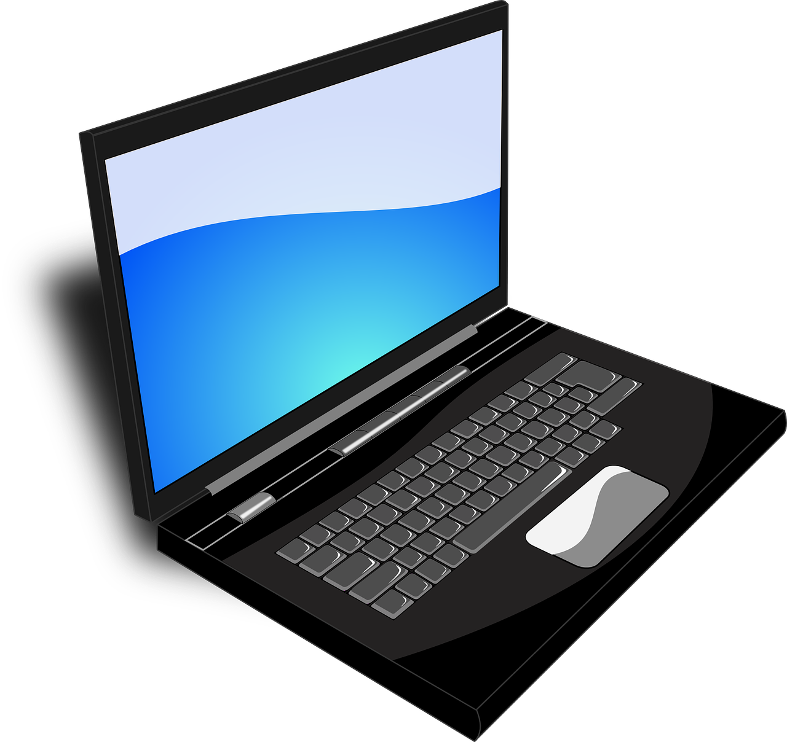

Namizni računalnik je vrsta osebnega računalnika, ki je namenjen uporabi na namizju ali mizi. To je samostojna enota, ki vključuje vse potrebne komponente za delovanje, vključno s procesorjem, pomnilnikom, trdim diskom, optičnim pogonom, grafično kartico, vhodno-izhodnimi priključki in napajalnikom.
 PRENOSNI RAČUNALNIK:
PRENOSNI RAČUNALNIK: Prenosni računalniki, pogosto imenovani tudi prenosniki ali laptopi, so prenosni računalniški sistemi, zasnovani za enostavno prenašanje in uporabo na različnih mestih. imajo vgrajen zaslon, tipkovnico in sledilno ploščico (touchpad), kar omogoča uporabnikom enostavno interakcijo brez dodatnih zunanjih naprav. Opremljeni so tudi z baterijo, ki omogoča delovanje brez neposredne električne povezave. Namenjeni so predcvsem uporabi na poti. Prav zaradi tega, ker so prenosni in lažji, se lahko z njimi premikate med različnimi lokacijami.
 TABLIČNI RAČUNALNIKI:
Tablični računalniki so prenosljivi računalniški sistemi, ki so zasnovani v obliki plošče z zaslonom na dotih. So kompaktni in lahki, zato so enostavni za uporabo na poti. Postali so priljubljeni predvsem zaradi svoje prenosljivosti, saj so tanki in lahki. Zaradi svoje oblike jih lahko tudi držimo v roki ali pa jih postavimo na mizo. Imajo dostop do številnih aplikacij preko spletnih trgovin, kot je na primer App store ali Google Plaz. Najpogosteje se uporabljajo za komuniciranje, ustvarjanje vsebine, igranje iger, gledanje filmov ter poslušanja glasbe.